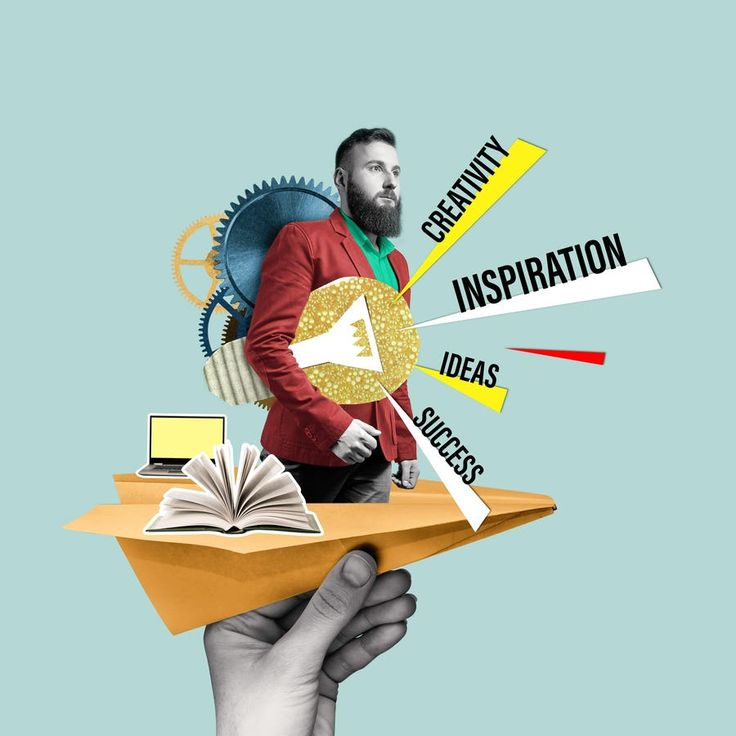
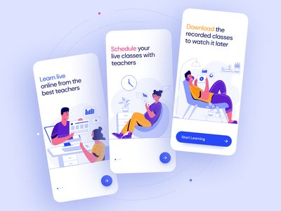

Blog

Watch your language! 5 reasons why we think learning a language is amazing
READ MORE

How does a skill swap go down?
READ MORE

The skill swap — an eSwapp story
Chapter 1 of “The skill swap”. We meet Kwame and Stephanie, two NHS workers who have developed a
passion for learning a new skill during the coronavirus pandemic.
*This is a work of fiction.
Any similarity to actual persons, living or dead, is purely coincidental.*
READ MORE

Top 5 skills to swap in 2023
Discover the top 5 skills that are in high demand for skill swapping in 2023. From coding to cooking,
find out what skills you can exchange to enhance your knowledge.
READ MORE

How to organize a successful skill swap event
Learn the steps to organize a successful skill swap event. From planning to execution, we provide you
with all the tips and tricks to make your event a hit.
READ MORE

Online skill swapping: The future of learning
Explore the benefits of online skill swapping and how it is revolutionizing the way we learn. Find
out how you can participate in online skill swap sessions from the comfort of your home.
READ MORE

Skill swap success stories: Real-life experiences
Read about real-life experiences of people who have successfully swapped skills. Learn how skill
swapping has impacted their lives and careers.
READ MORE

How to start your own skill swap blog
Interested in sharing your skill swap experiences with the world? Learn how to start your own skill
swap blog and build a community of like-minded individuals.
READ MORE

Best mobile apps for skill swapping
Discover the best mobile apps that make skill swapping easy and accessible. From finding skill swap
partners to managing your sessions, these apps have it all.
READ MORE

Networking through skill swapping
Learn how skill swapping can help you expand your professional network. Discover tips on how to make
meaningful connections through skill swap events and platforms.
READ MORE

Preparing for your first skill swap session
Nervous about your first skill swap session? We provide you with a comprehensive guide on how to
prepare and make the most out of your skill swap experience.
READ MORE
Public speaking skills: How to present at a skill swap event
Learn how to effectively present your skills at a skill swap event. From preparation to delivery, we
provide you with tips to become a confident public speaker.
READ MORE
Language learning through skill swapping
Discover how skill swapping can help you learn a new language. Find out the best practices for
exchanging language skills and improving your fluency.
READ MORE

Coding skills: How to swap and learn programming languages
Interested in learning to code? Discover how skill swapping can help you learn programming languages
and improve your coding skills.
READ MORE

Cooking skills: Swap recipes and culinary techniques
Love cooking? Learn how to swap recipes and culinary techniques with others. Discover new dishes and
improve your cooking skills through skill swapping.
READ MORE
Watch your language! 5 reasons why we think learning a language is amazing
Learning a new language can be an incredibly rewarding experience. Here are five reasons why we think
it's amazing:
1. It opens up new opportunities for travel and work. When you learn a new language, you can communicate
with people from different countries and cultures. This can open up new opportunities for travel, work,
and even friendships. Imagine being able to travel to a foreign country and speak the local language
fluently. It can make your travel experience much more enjoyable and immersive.
2. It helps you understand and appreciate different cultures. Language is a key part of any culture. By
learning a new language, you gain insight into the customs, traditions, and values of the people who
speak that language. This can help you develop a deeper understanding and appreciation of different
cultures. It can also make you more open-minded and tolerant of cultural differences.
3. It improves your cognitive abilities and memory. Studies have shown that learning a new language can
have a positive impact on your brain. It can improve your cognitive abilities, such as problem-solving
and critical thinking. It can also enhance your memory and multitasking skills. Learning a new language
is like a workout for your brain, keeping it sharp and healthy.
4. It allows you to connect with more people and make new friends. When you speak multiple languages, you
can connect with a wider range of people. This can help you build new friendships and expand your social
network. It can also make you more attractive to potential employers, as bilingual or multilingual
individuals are often in high demand in the job market.
5. It can be a fun and challenging hobby. Learning a new language can be a fun and rewarding hobby. It
can challenge you to step out of your comfort zone and push your limits. It can also give you a sense of
accomplishment and pride as you progress and become more proficient in the language. Plus, there are
many resources available, such as language learning apps, online courses, and language exchange
programs, to help you along the way.
BACK
How does a skill swap go down?
A skill swap typically involves two or more people exchanging their skills and knowledge. Here's how it
usually works:
1. Find a skill swap partner who has a skill you want to learn and is interested in learning a skill you
have. This can be done through online platforms, local community groups, or social media. Look for
someone who has expertise in the skill you want to learn and is willing to teach you in exchange for
learning a skill you possess.
2. Agree on a time and place to meet, either in person or online. Once you have found a skill swap
partner, coordinate a time and place to meet. This can be done in person at a local coffee shop,
library, or community center. Alternatively, you can arrange virtual meetings through video conferencing
platforms like Zoom or Skype.
3. Take turns teaching each other your respective skills. During the skill swap session, take turns
teaching each other your skills. For example, if you are swapping cooking skills for coding skills,
spend the first half of the session teaching your partner how to cook a specific dish. Then, switch
roles and have your partner teach you the basics of coding.
4. Practice and provide feedback to each other. After the initial teaching session, practice the skills
you have learned. Provide feedback to each other on what you found helpful and what could be improved.
This will help both of you refine your teaching methods and enhance your learning experience.
5. Continue to meet and practice until you both feel confident in your new skills. Skill swapping is an
ongoing process. Continue to meet and practice your new skills until you both feel confident in your
abilities. This may take several sessions, so be patient and persistent. Remember, the goal is to learn
and grow together.
BACK
The skill swap — an eSwapp story
Chapter 1 of “The skill swap”. We meet Kwame and Stephanie, two NHS workers who have developed a passion
for learning a new skill during the coronavirus pandemic.
Kwame, a nurse, and Stephanie, a doctor, found themselves with more free time during the pandemic due to
the reduced number of elective procedures. They decided to use this time to learn new skills that could
benefit their personal and professional lives.
Kwame had always been interested in photography but never had the time to pursue it. Stephanie, on the
other hand, wanted to improve her cooking skills. They decided to swap skills, with Kwame teaching
Stephanie photography and Stephanie teaching Kwame how to cook.
They started by meeting once a week. Kwame brought his camera and taught Stephanie the basics of
photography, including how to use the camera settings, composition, and lighting. Stephanie, in turn,
taught Kwame how to cook simple and healthy meals, starting with basic knife skills and progressing to
more complex recipes.
As they continued their skill swap sessions, they both noticed significant improvements in their skills.
Kwame became more confident in his photography, capturing beautiful images of nature and people.
Stephanie, on the other hand, became more comfortable in the kitchen, experimenting with new recipes and
ingredients.
The skill swap not only helped them learn new skills but also strengthened their friendship. They enjoyed
spending time together, sharing their knowledge, and supporting each other in their learning journey.
By the end of the pandemic, Kwame had built an impressive portfolio of photographs, and Stephanie had
become a proficient home cook. They both felt a sense of accomplishment and gratitude for the
opportunity to learn and grow together.
*This is a work of fiction. Any similarity to actual persons, living or dead, is purely coincidental.*
BACK
Top 5 skills to swap in 2023
Discover the top 5 skills that are in high demand for skill swapping in 2023. From coding to cooking,
find out what skills you can exchange to enhance your knowledge.
1. Coding and programming languages: With the increasing demand for tech professionals, learning to code
is a valuable skill. Whether it's web development, app development, or data analysis, coding skills are
highly sought after. Swapping coding skills can help you learn new programming languages and improve
your technical expertise.
2. Cooking and culinary skills: Cooking is a practical and enjoyable skill to have. Whether you're a
beginner or an experienced cook, there's always something new to learn in the kitchen. Swapping cooking
skills can help you discover new recipes, techniques, and cuisines.
3. Language learning: Learning a new language can open up new opportunities for travel, work, and
cultural understanding. Swapping language skills with a native speaker can help you improve your fluency
and pronunciation. It's also a great way to make new friends and learn about different cultures.
4. Digital marketing: In today's digital age, digital marketing skills are essential for businesses and
individuals alike. Swapping digital marketing skills can help you learn about social media marketing,
search engine optimization (SEO), content marketing, and more. These skills can help you promote your
business or personal brand effectively.
5. Photography and videography: With the rise of social media and content creation, photography and
videography skills are in high demand. Swapping these skills can help you learn how to capture stunning
images and videos, edit them professionally, and share them with the world. Whether you're interested in
portrait photography, landscape photography, or video production, there's always something new to learn.
BACK
How to organize a successful skill swap event
Learn the steps to organize a successful skill swap event. From planning to execution, we provide you
with all the tips and tricks to make your event a hit.
1. Define the purpose and goals of the event: Before organizing a skill swap event, it's important to
define the purpose and goals. Are you looking to bring together people with similar interests? Do you
want to create a platform for learning and sharing skills? Having clear goals will help you plan the
event more effectively.
2. Choose a suitable venue and date: The venue and date of the event are crucial for its success. Choose
a venue that is easily accessible and can accommodate the number of participants. Consider factors such
as seating arrangements, audio-visual equipment, and parking facilities. Select a date and time that
works for most participants, keeping in mind their availability and preferences.
3. Promote the event to attract participants: Effective promotion is key to attracting participants to
your skill swap event. Use social media, email newsletters, community bulletin boards, and word of mouth
to spread the word. Create eye-catching posters and flyers with all the necessary details, such as the
date, time, venue, and registration information. Encourage participants to invite their friends and
colleagues.
4. Plan the schedule and activities: A well-structured schedule will ensure that the event runs smoothly.
Plan the activities in advance, including skill swap sessions, workshops, and networking opportunities.
Allocate time for introductions, icebreakers, and breaks. Make sure to have a mix of activities that
cater to different interests and skill levels.
5. Provide resources and materials: To make the skill swap sessions more effective, provide participants
with the necessary resources and materials. This could include handouts, worksheets, tools, and
equipment. If possible, arrange for guest speakers or experts to share their knowledge and insights.
Ensure that all participants have access to the resources they need to fully engage in the activities.
6. Facilitate and support participants: As the organizer, your role is to facilitate and support the
participants throughout the event. Be available to answer questions, provide guidance, and address any
issues that may arise. Encourage participants to actively engage in the skill swap sessions and make the
most of the learning opportunities. Create a positive and inclusive environment where everyone feels
comfortable sharing their skills and knowledge.
7. Gather feedback and evaluate the event: After the event, gather feedback from the participants to
evaluate its success. Use surveys, feedback forms, or informal discussions to collect their opinions and
suggestions. Analyze the feedback to identify areas for improvement and make necessary adjustments for
future events. Recognize and celebrate the achievements of the participants and express your gratitude
for their participation.
By following these steps, you can organize a successful skill swap event that fosters learning,
collaboration, and community building. Remember, the key to a successful event is careful planning,
effective promotion, and active facilitation. Good luck!
BACK
Online skill swapping: The future of learning
Explore the benefits of online skill swapping and how it is revolutionizing the way we learn. Find out
how you can participate in online skill swap sessions from the comfort of your home.
1. Convenience and flexibility: One of the biggest advantages of online skill swapping is the convenience
and flexibility it offers. You can participate in skill swap sessions from the comfort of your home,
without the need to travel. This makes it easier to fit learning into your busy schedule. You can choose
the time and duration of the sessions that work best for you.
2. Access to a global network: Online skill swapping allows you to connect with people from all over the
world. This gives you access to a diverse range of skills and knowledge that you may not find locally.
You can learn from experts in different fields and gain insights from different cultures. This global
network can also open up new opportunities for collaboration and networking.
3. Cost-effective learning: Online skill swapping is often more cost-effective than traditional learning
methods. Many online platforms offer free or low-cost skill swap sessions. You can also save money on
travel and accommodation expenses. This makes it an affordable option for learning new skills and
expanding your knowledge.
4. Personalized learning experience: Online skill swapping allows you to tailor the learning experience
to your needs and preferences. You can choose the skills you want to learn and the pace at which you
want to learn them. You can also receive personalized feedback and support from your skill swap partner.
This makes the learning process more effective and enjoyable.
5. Variety of learning resources: Online skill swapping platforms offer a variety of learning resources,
such as video tutorials, webinars, and interactive exercises. These resources can enhance your learning
experience and help you understand the concepts better. You can also access these resources at any time,
allowing you to review and practice the skills at your own pace.
6. Building a supportive community: Online skill swapping can help you build a supportive community of
like-minded individuals. You can connect with people who share your interests and goals. This community
can provide you with motivation, encouragement, and accountability. You can also share your progress and
achievements with the community, creating a sense of belonging and camaraderie.
7. Continuous learning and growth: Online skill swapping promotes continuous learning and growth. You can
keep updating your skills and knowledge as new trends and technologies emerge. This helps you stay
relevant and competitive in your field. It also keeps your mind active and engaged, promoting lifelong
learning.
In conclusion, online skill swapping is revolutionizing the way we learn. It offers convenience,
flexibility, and access to a global network of skills and knowledge. It is a cost-effective and
personalized learning experience that promotes continuous growth and community building. So, why not
give it a try and start your online skill swapping journey today?
BACK
Skill swap success stories: Real-life experiences
Read about real-life experiences of people who have successfully swapped skills. Learn how skill swapping
has impacted their lives and careers.
1. Sarah and John: Sarah, a graphic designer, wanted to learn web development to expand her skill set.
John, a web developer, wanted to improve his design skills. They decided to swap skills, with Sarah
teaching John graphic design and John teaching Sarah web development. Over the course of several months,
they met regularly to share their knowledge and practice their new skills. As a result, Sarah was able
to create her own website, and John improved the visual appeal of his projects. They both gained
valuable skills that enhanced their careers.
2. Emily and David: Emily, a marketing professional, wanted to learn photography to create better content
for her social media campaigns. David, a photographer, wanted to learn digital marketing to promote his
photography business. They decided to swap skills, with Emily teaching David digital marketing and David
teaching Emily photography. Through their skill swap sessions, Emily learned how to take stunning
photos, and David learned how to effectively market his work online. Their collaboration led to
increased engagement and success in their respective fields.
3. Lisa and Mark: Lisa, a chef, wanted to learn how to code to create a recipe app. Mark, a software
engineer, wanted to learn how to cook healthy meals. They decided to swap skills, with Lisa teaching
Mark cooking and Mark teaching Lisa coding. Over time, Lisa developed a functional recipe app, and Mark
became proficient in cooking nutritious meals. Their skill swap not only helped them achieve their goals
but also improved their overall well-being.
4. Anna and Michael: Anna, a language teacher, wanted to learn how to play the guitar. Michael, a
musician, wanted to learn Spanish. They decided to swap skills, with Anna teaching Michael Spanish and
Michael teaching Anna guitar. Through their skill swap sessions, Anna learned to play her favorite songs
on the guitar, and Michael became conversational in Spanish. Their skill swap enriched their lives and
brought them closer together as friends.
5. Rachel and Tom: Rachel, a fitness trainer, wanted to learn how to paint. Tom, an artist, wanted to
improve his fitness. They decided to swap skills, with Rachel teaching Tom fitness routines and Tom
teaching Rachel painting techniques. Over time, Rachel created beautiful artworks, and Tom improved his
physical health. Their skill swap not only helped them achieve their personal goals but also inspired
them to pursue new hobbies and interests.
These real-life success stories demonstrate the power of skill swapping. By sharing their knowledge and
learning from each other, these individuals were able to achieve their goals, enhance their careers, and
improve their lives. Skill swapping fosters collaboration, growth, and mutual support, making it a
valuable practice for anyone looking to learn and develop new skills.
BACK
How to start your own skill swap blog
Interested in sharing your skill swap experiences with the world? Learn how to start your own skill swap
blog and build a community of like-minded individuals.
1. Choose a blogging platform: The first step in starting your own skill swap blog is to choose a
blogging platform. There are many options available, such as WordPress, Blogger, and Medium. Consider
factors such as ease of use, customization options, and cost when selecting a platform. WordPress is a
popular choice for its flexibility and extensive features.
2. Define your niche and target audience: To make your blog stand out, it's important to define your
niche and target audience. What specific aspect of skill swapping do you want to focus on? Who are your
ideal readers? Defining your niche and target audience will help you create content that resonates with
your readers and attracts a loyal following.
3. Create a content plan: A content plan will help you stay organized and consistent with your blog
posts. Start by brainstorming topics related to skill swapping that you want to write about. Create a
content calendar to schedule your posts and ensure a regular publishing schedule. Consider including a
mix of how-to guides, personal stories, interviews, and tips and tricks.
4. Write engaging and valuable content: The key to a successful blog is creating engaging and valuable
content. Write in a conversational tone and share your personal experiences and insights. Provide
practical tips and actionable advice that your readers can apply to their own skill swapping journeys.
Use visuals, such as images and videos, to enhance your content and make it more appealing.
5. Promote your blog: To attract readers to your blog, you need to promote it effectively. Use social
media platforms, such as Facebook, Twitter, and Instagram, to share your blog posts and engage with your
audience. Join online communities and forums related to skill swapping and share your blog with members.
Consider guest posting on other blogs to reach a wider audience.
6. Build a community: Building a community around your blog will help you connect with like-minded
individuals and create a loyal following. Encourage readers to leave comments and share their own skill
swap experiences. Respond to comments and engage with your readers to build relationships. Consider
creating a Facebook group or an email newsletter to keep your community engaged and informed.
7. Monetize your blog: Once your blog has gained traction, you can explore ways to monetize it. Consider
options such as affiliate marketing, sponsored posts, and selling digital products or services. For
example, you could create and sell e-books, online courses, or coaching sessions related to skill
swapping. Be transparent with your readers about any monetization methods you use.
Starting your own skill swap blog can be a rewarding and fulfilling endeavor. By sharing your knowledge
and experiences, you can inspire and help others on their skill swapping journeys. With dedication,
consistency, and a passion for learning, you can build a successful blog and a supportive community of
skill swappers.
BACK
Best mobile apps for skill swapping
Discover the best mobile apps that make skill swapping easy and accessible. From finding skill swap
partners to managing your sessions, these apps have it all.
1. Skillshare: Skillshare is a popular platform that offers a wide range of online classes and workshops.
It allows you to learn new skills from experts in various fields, such as design, photography, writing,
and more. You can also create and share your own classes to teach others. The app provides a community
of learners and teachers, making it easy to connect and swap skills.
2. Meetup: Meetup is a platform that helps you find and join local groups and events based on your
interests. You can use Meetup to find skill swap groups in your area or create your own group to connect
with others who want to exchange skills. The app allows you to organize events, communicate with
members, and build a community of like-minded individuals.
3. Tandem: Tandem is a language exchange app that connects you with native speakers of the language you
want to learn. You can practice speaking, writing, and listening with your language partner through
text, voice, and video chats. The app also offers language learning resources and tools to help you
improve your skills. Tandem is a great way to swap language skills and make new friends from around the
world.
4. TimeRepublik: TimeRepublik is a global timebanking platform where you can exchange your skills and
services for time credits. You can offer your skills, such as graphic design, writing, or tutoring, and
earn time credits that you can use to receive services from others. The app allows you to create a
profile, list your skills, and connect with other members to swap skills and services.
5. Swapaskill: Swapaskill is a dedicated skill swapping platform that connects people who want to
exchange skills. You can create a profile, list the skills you want to offer and learn, and find
potential skill swap partners. The app provides a messaging system to communicate with your partners and
schedule skill swap sessions. Swapaskill makes it easy to find and connect with people who share your
interests and goals.
6. Couchsurfing: Couchsurfing is a platform that connects travelers with local hosts who offer free
accommodation. In addition to finding a place to stay, you can use Couchsurfing to connect with locals
who are willing to share their skills and knowledge. You can participate in local events, join
interest-based groups, and arrange skill swap sessions with other members. Couchsurfing is a great way
to learn new skills while traveling and make meaningful connections with people from different cultures.
7. Nextdoor: Nextdoor is a neighborhood-based social networking app that helps you connect with your
local community. You can use Nextdoor to find neighbors who are interested in skill swapping and
organize local skill swap events. The app allows you to post messages, create groups, and communicate
with other members in your area. Nextdoor is a convenient way to build a network of skill swappers in
your neighborhood.
These mobile apps make skill swapping easy and accessible, allowing you to connect with people from
around the world or in your local community. Whether you want to learn a new language, improve your
cooking skills, or exchange services, these apps provide the tools and resources you need to start
swapping skills today.
BACK
Watch your language! 5 reasons why we think learning a language is amazing
Learning a new language can be an incredibly rewarding experience. Here are five reasons why we think
it's amazing:
1. It opens up new opportunities for travel and work. When you learn a new language, you can communicate
with people from different countries and cultures. This can open up new opportunities for travel, work,
and even friendships. Imagine being able to travel to a foreign country and speak the local language
fluently. It can make your travel experience much more enjoyable and immersive.
2. It helps you understand and appreciate different cultures. Language is a key part of any culture. By
learning a new language, you gain insight into the customs, traditions, and values of the people who
speak that language. This can help you develop a deeper understanding and appreciation of different
cultures. It can also make you more open-minded and tolerant of cultural differences.
3. It improves your cognitive abilities and memory. Studies have shown that learning a new language can
have a positive impact on your brain. It can improve your cognitive abilities, such as problem-solving
and critical thinking. It can also enhance your memory and multitasking skills. Learning a new language
is like a workout for your brain, keeping it sharp and healthy.
4. It allows you to connect with more people and make new friends. When you speak multiple languages, you
can connect with a wider range of people. This can help you build new friendships and expand your social
network. It can also make you more attractive to potential employers, as bilingual or multilingual
individuals are often in high demand in the job market.
5. It can be a fun and challenging hobby. Learning a new language can be a fun and rewarding hobby. It
can challenge you to step out of your comfort zone and push your limits. It can also give you a sense of
accomplishment and pride as you progress and become more proficient in the language. Plus, there are
many resources available, such as language learning apps, online courses, and language exchange
programs, to help you along the way.
BACK
Networking through skill swapping
Learn how skill swapping can help you expand your professional network. Discover tips on how to make
meaningful connections through skill swap events and platforms.
1. Attend skill swap events: Skill swap events are a great way to meet new people and expand your
network. Look for local events or online meetups where you can connect with others who are interested in
skill swapping. Participate actively in the sessions, introduce yourself, and engage with other
attendees. These events provide a platform to showcase your skills and learn from others.
2. Join online skill swap communities: There are many online communities and forums dedicated to skill
swapping. Join these communities to connect with like-minded individuals from around the world.
Participate in discussions, share your experiences, and offer your skills to others. Online communities
provide a supportive environment where you can build relationships and expand your network.
3. Offer your skills to others: One of the best ways to network through skill swapping is to offer your
skills to others. Whether it's teaching a language, providing career advice, or sharing your expertise
in a specific field, offering your skills can help you build connections and establish yourself as a
valuable resource. Be generous with your time and knowledge, and others will be more likely to
reciprocate.
4. Collaborate on projects: Skill swapping can lead to exciting collaboration opportunities. Look for
ways to collaborate with others on projects that align with your interests and goals. For example, if
you're a graphic designer, you could collaborate with a web developer to create a website. Collaborative
projects allow you to combine your skills, learn from each other, and build strong professional
relationships.
5. Follow up and stay in touch: Building a network through skill swapping requires ongoing effort. After
meeting someone at a skill swap event or online community, follow up with them to stay in touch. Send a
thank-you message, connect on social media, and check in periodically to see how they're doing.
Maintaining these connections will help you build a strong and supportive network over time.
6. Share your success stories: Sharing your skill swap success stories can inspire others and attract new
connections. Write blog posts, create social media content, or give presentations about your skill swap
experiences. Highlight the skills you've learned, the people you've met, and the impact skill swapping
has had on your life. Sharing your stories can help you establish yourself as a thought leader in the
skill swap community.
7. Be open to new opportunities: Networking through skill swapping requires an open mind and a
willingness to explore new opportunities. Be open to learning new skills, meeting new people, and
stepping out of your comfort zone. Embrace the diversity of experiences and perspectives that skill
swapping offers. By being open and adaptable, you'll be able to make meaningful connections and expand
your network.
In conclusion, skill swapping is a powerful way to expand your professional network. By attending events,
joining online communities, offering your skills, collaborating on projects, following up, sharing your
success stories, and being open to new opportunities, you can build a strong and supportive network of
like-minded individuals. Start networking through skill swapping today and unlock new opportunities for
personal and professional growth.
BACK
Preparing for your first skill swap session
Nervous about your first skill swap session? We provide you with a comprehensive guide on how to prepare
and make the most out of your skill swap experience.
1. Identify your goals: Before your first skill swap session, take some time to identify your goals. What
specific skills do you want to learn or teach? What are your expectations for the session? Having clear
goals will help you stay focused and make the most of your time.
2. Research your skill swap partner: If possible, do some research on your skill swap partner before the
session. Learn about their background, expertise, and interests. This will help you understand their
perspective and tailor your teaching or learning approach accordingly. It will also help you build
rapport and establish a positive connection.
3. Prepare your materials: Depending on the skills you're swapping, you may need to prepare materials or
resources for the session. This could include handouts, worksheets, tools, or equipment. Make sure you
have everything you need ready in advance to ensure a smooth and productive session.
4. Set a clear agenda: Having a clear agenda for the session will help you stay organized and make the
most of your time. Outline the topics you want to cover, the activities you want to do, and the time
allocated for each. Share the agenda with your skill swap partner in advance so they know what to
expect.
5. Create a comfortable environment: Whether you're meeting in person or online, creating a comfortable
environment is important for a successful skill swap session. Choose a quiet and well-lit space where
you can focus without distractions. Make sure you have a stable internet connection and all the
necessary equipment for online sessions.
6. Be open and flexible: Skill swapping is a collaborative process, so it's important to be open and
flexible. Be willing to adapt your approach based on your partner's needs and preferences. Listen
actively, ask questions, and provide constructive feedback. Remember, the goal is to learn and grow
together.
7. Take notes and practice: During the session, take notes on the key points and techniques you learn.
This will help you remember the information and refer back to it later. After the session, practice the
skills you've learned to reinforce your understanding and improve your proficiency. Consistent practice
is key to mastering new skills.
8. Follow up and provide feedback: After the session, follow up with your skill swap partner to provide
feedback and express your gratitude. Share what you found helpful and any areas for improvement. This
will help both of you refine your teaching and learning methods for future sessions. Maintaining a
positive and supportive relationship with your partner is important for ongoing skill swapping.
By following these steps, you can prepare effectively for your first skill swap session and make the most
of the experience. Remember, skill swapping is a journey of mutual learning and growth. Embrace the
process, stay open to new opportunities, and enjoy the benefits of sharing and acquiring new skills.
BACK
Public speaking skills: How to present at a skill swap event
Learn how to effectively present your skills at a skill swap event. From preparation to delivery, we
provide you with tips to become a confident public speaker.
1. Know your audience: Understanding your audience is key to delivering an effective presentation.
Research the demographics, interests, and knowledge level of your audience. Tailor your content and
delivery style to meet their needs and expectations. This will help you connect with your audience and
keep them engaged.
2. Prepare your content: Plan and organize your content in advance. Create an outline of the key points
you want to cover and the order in which you will present them. Use visuals, such as slides, images, and
videos, to enhance your presentation and make it more engaging. Practice your presentation multiple
times to ensure a smooth delivery.
3. Start with a strong opening: The opening of your presentation sets the tone for the rest of the
session. Start with a strong and attention-grabbing introduction. This could be a personal story, a
surprising fact, or a thought-provoking question. A strong opening will capture your audience's
attention and make them eager to hear more.
4. Use clear and concise language: When presenting, use clear and concise language to convey your
message. Avoid jargon and complex terms that may confuse your audience. Break down complex concepts into
simple and understandable terms. Use examples and analogies to illustrate your points and make them
relatable.
5. Engage your audience: Keep your audience engaged by involving them in the presentation. Ask questions,
encourage participation, and invite feedback. Use interactive elements, such as polls, quizzes, and
group activities, to make the session more dynamic. Engaging your audience will make the presentation
more enjoyable and memorable.
6. Manage your time: Time management is crucial for a successful presentation. Allocate time for each
section of your presentation and stick to the schedule. Avoid going off on tangents or spending too much
time on one topic. Keep an eye on the clock and make sure you have enough time for questions and
discussions at the end.
7. Use body language effectively: Your body language plays a significant role in how your message is
received. Use confident and open body language to convey your message effectively. Maintain eye contact
with your audience, use gestures to emphasize key points, and move around the stage to keep the
audience's attention. Avoid fidgeting or crossing your arms, as these can be distracting.
8. Handle questions with confidence: Be prepared to handle questions from the audience with confidence.
Listen to the questions carefully and provide clear and concise answers. If you don't know the answer,
be honest and offer to follow up later. Handling questions confidently will demonstrate your expertise
and build trust with your audience.
9. Practice, practice, practice: The key to becoming a confident public speaker is practice. Practice
your presentation multiple times, both alone and in front of a small audience. Record yourself and
review the footage to identify areas for improvement. The more you practice, the more comfortable and
confident you will become.
10. Seek feedback: After your presentation, seek feedback from your audience and peers. Ask for
constructive criticism and suggestions for improvement. Use the feedback to refine your presentation
skills and make your future presentations even better.
By following these tips, you can become a confident and effective public speaker at skill swap events.
Remember, public speaking is a skill that can be developed with practice and dedication. Embrace the
opportunity to share your knowledge and skills with others, and enjoy the process of becoming a better
presenter.
BACK
Language learning through skill swapping
Discover how skill swapping can help you learn a new language. Find out the best practices for exchanging
language skills and improving your fluency.
1. Find a language exchange partner: The first step in language learning through skill swapping is to
find a language exchange partner. Look for someone who is a native speaker of the language you want to
learn and is interested in learning your native language. You can find language exchange partners
through online platforms, language learning apps, or local language exchange groups.
2. Set clear goals and expectations: Before starting your language exchange sessions, set clear goals and
expectations with your partner. Discuss what you want to achieve, how often you will meet, and the
format of your sessions. Having clear goals and expectations will help you stay focused and make the
most of your language exchange.
3. Create a structured plan: A structured plan will help you stay organized and make steady progress in
your language learning. Divide your sessions into different segments, such as conversation practice,
vocabulary building, grammar exercises, and cultural discussions. Use a variety of resources, such as
textbooks, language learning apps, and online videos, to support your learning.
4. Practice speaking and listening: Speaking and listening are essential skills for language learning.
During your language exchange sessions, focus on practicing speaking and listening as much as possible.
Engage in conversations on different topics, ask questions, and actively listen to your partner. This
will help you improve your fluency and comprehension.
5. Use real-life scenarios: To make your language learning more practical and relevant, use real-life
scenarios in your practice. Role-play different situations, such as ordering food at a restaurant,
asking for directions, or making small talk. This will help you build confidence and prepare you for
real-life interactions in the target language.
6. Provide and receive feedback: Feedback is crucial for language learning. Provide constructive feedback
to your partner on their language use, and be open to receiving feedback on your own. Correct each
other's mistakes, suggest improvements, and encourage each other to keep practicing. Positive and
supportive feedback will help you both improve.
7. Immerse yourself in the language: Immersion is one of the most effective ways to learn a language.
Surround yourself with the target language as much as possible. Watch movies, listen to music, read
books, and follow social media accounts in the target language. Immersion will help you develop a
natural feel for the language and improve your overall proficiency.
8. Be patient and persistent: Language learning is a gradual process that requires patience and
persistence. Don't get discouraged by mistakes or slow progress. Keep practicing regularly, stay
motivated, and celebrate your achievements along the way. Consistent effort and dedication will lead to
steady improvement over time.
9. Explore the culture: Language and culture are closely connected. To deepen your understanding of the
language, explore the culture of the people who speak it. Learn about their customs, traditions,
history, and values. This cultural knowledge will enrich your language learning experience and help you
communicate more effectively.
10. Enjoy the journey: Language learning through skill swapping is not just about acquiring a new skill;
it's also about building connections and enjoying the journey. Embrace the opportunity to learn from
your partner, share your own knowledge, and make new friends. Enjoy the process of discovering a new
language and culture.
By following these best practices, you can make the most of your language learning through skill
swapping. Remember, language learning is a rewarding and enriching experience that opens up new
opportunities and broadens your horizons. Start your language exchange journey today and enjoy the
benefits of becoming bilingual or multilingual.
BACK
Coding skills: How to swap and learn programming languages
Interested in learning to code? Discover how skill swapping can help you learn programming languages and
improve your coding skills.
1. Find a coding partner: The first step in learning to code through skill swapping is to find a coding
partner. Look for someone who has experience in the programming language you
want to learn and is interested in learning a skill you possess. You can find coding partners through
online coding communities, forums, or local coding meetups.
2. Set clear learning objectives: Before starting your coding sessions, set clear learning objectives
with your partner. Discuss what specific programming languages or concepts you want to learn, the
projects you want to work on, and the goals you want to achieve. Having clear objectives will help you
stay focused and make the most of your coding sessions.
3. Create a structured learning plan: A structured learning plan will help you stay organized and make
steady progress in your coding journey. Break down the learning process into manageable steps, such as
understanding basic syntax, learning key concepts, and building small projects. Use a variety of
resources, such as online tutorials, coding exercises, and documentation, to support your learning.
4. Practice coding regularly: Consistent practice is key to mastering coding skills. Set aside dedicated
time each week to practice coding with your partner. Work on coding exercises, solve problems, and build
projects together. The more you practice, the more comfortable and proficient you will become in the
programming language.
5. Collaborate on coding projects: Collaborating on coding projects is a great way to apply what you've
learned and gain practical experience. Choose a project that interests both you and your partner, and
work on it together. Divide the tasks, write code, review each other's work, and debug issues as a team.
Collaboration will help you learn from each other and improve your coding skills.
6. Use version control systems: Version control systems, such as Git, are essential tools for
collaborative coding. Learn how to use Git to manage your code, track changes, and collaborate with your
partner. Create a repository for your project, commit your changes regularly, and use branches to work
on different features. Version control will help you keep your code organized and facilitate
collaboration.
7. Seek feedback and code reviews: Feedback and code reviews are crucial for improving your coding
skills. Ask your partner to review your code and provide constructive feedback. Look for areas where you
can improve, such as code readability, efficiency, and best practices. Similarly, review your partner's
code and provide feedback. Code reviews will help you learn from each other and write better code.
8. Explore coding resources and communities: There are many online resources and communities that can
support your coding journey. Join coding forums, participate in coding challenges, and attend webinars
or workshops. Explore platforms like Stack Overflow, GitHub, and Codecademy for tutorials,
documentation, and coding exercises. Engaging with the coding community will provide you with valuable
insights and support.
9. Stay updated with industry trends: The tech industry is constantly evolving, with new programming
languages, frameworks, and tools emerging regularly. Stay updated with the latest trends and
advancements in the field. Follow tech blogs, subscribe to newsletters, and join online communities to
keep yourself informed. Staying updated will help you stay relevant and competitive in the tech
industry.
10. Enjoy the learning process: Learning to code through skill swapping is not just about acquiring
technical skills; it's also about enjoying the learning process. Embrace the challenges, celebrate your
achievements, and have fun coding with your partner. The journey of learning to code is rewarding and
fulfilling, and skill swapping makes it even more enjoyable.
By following these steps, you can effectively learn programming languages and improve your coding skills
through skill swapping. Remember, coding is a valuable skill that opens up numerous opportunities in the
tech industry. Start your coding journey today and enjoy the benefits of becoming a proficient coder.
BACK
Cooking skills: Swap recipes and culinary techniques
Love cooking? Learn how to swap recipes and culinary techniques with others. Discover new dishes and
improve your cooking skills through skill swapping.
1. Find a cooking partner: The first step in swapping cooking skills is to find a cooking partner. Look
for someone who has expertise in the type of cuisine or cooking techniques you want to learn and is
interested in learning from you. You can find cooking partners through local cooking classes, food
communities, or online platforms.
2. Set clear goals and expectations: Before starting your cooking sessions, set clear goals and
expectations with your partner. Discuss what specific recipes or techniques you want to learn, the
frequency of your sessions, and the format of your meetings. Having clear goals and expectations will
help you stay focused and make the most of your cooking sessions.
3. Plan your cooking sessions: Planning is key to a successful cooking session. Decide on the recipes you
want to cook, gather the necessary ingredients, and prepare any tools or equipment you will need. Create
a step-by-step plan for the cooking process, including preparation, cooking, and presentation. Share the
plan with your partner in advance so they know what to expect.
4. Cook together: Cooking together is a fun and interactive way to learn new recipes and techniques. Take
turns demonstrating and explaining each step of the recipe. Ask questions, share tips, and provide
feedback to each other. Cooking together allows you to learn hands-on and gain practical experience.
5. Experiment with new ingredients: One of the benefits of skill swapping is the opportunity to
experiment with new ingredients and flavors. Be open to trying new ingredients and incorporating them
into your recipes. This will help you expand your culinary repertoire and discover new tastes and
textures.
6. Share your culinary knowledge: Skill swapping is a two-way street, so be generous in sharing your
culinary knowledge with your partner. Teach them your favorite recipes, cooking techniques, and kitchen
hacks. Share your experiences, tips, and tricks to help them improve their cooking skills. The more you
share, the more you both benefit from the skill swap.
7. Document your recipes: Keep a record of the recipes you learn and create during your skill swap
sessions. Write down the ingredients, measurements, and step-by-step instructions. Take photos of the
finished dishes and any key steps in the cooking process. Documenting your recipes will help you
remember them and recreate them in the future.
8. Host cooking challenges: To make your skill swap sessions more exciting, consider hosting cooking
challenges with your partner. Choose a theme or ingredient and challenge each other to create a dish
based on it. Set a time limit and present your dishes to each other. Cooking challenges are a fun way to
test your skills, get creative, and learn from each other.
9. Explore different cuisines: Use skill swapping as an opportunity to explore different cuisines from
around the world. Learn about the traditional dishes, ingredients, and cooking techniques of various
cultures. Experiment with new recipes and flavors to broaden your culinary horizons. Exploring different
cuisines will make your cooking sessions more diverse and interesting.
10. Enjoy the process: Cooking is not just about the end result; it's also about enjoying the process.
Embrace the joy of cooking, the creativity it allows, and the satisfaction of creating delicious dishes.
Enjoy the time spent with your cooking partner, the conversations, and the shared experiences. Cooking
through skill swapping is a rewarding and enjoyable journey.
By following these steps, you can effectively swap cooking skills and improve your culinary abilities.
Remember, cooking is an art that can be continuously refined and perfected. Start your cooking skill
swap journey today and enjoy the benefits of becoming a better cook.
BACK